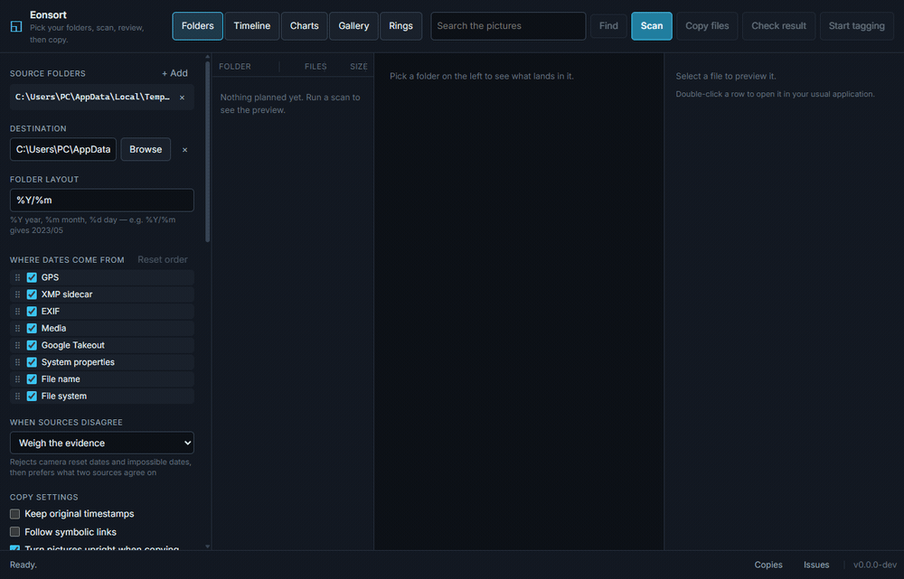

The date on the file is not always the date it was made.
eonsort reads every independent source for when a file was made, flags the dates a reset camera clock got wrong, and sorts the rest into a date-based folder tree. You see the whole result before a byte is copied. Scanning and copying only ever read your sources.
Windows, macOS and Linux. Desktop app and the eonsort command line tool. MIT licensed.
- File system2003-01-01 00:00factory-reset clock, rejected
- File name
IMG_20190514_092203.jpg2019-05-14 09:22 - EXIF
DateTimeOriginal2019-05-14 09:22
Filed under 2019/05: the file name and EXIF agree.
Every source, cross-checked.
Every source that reports a date is kept, and each one can be switched off. When they disagree, one of three rules decides which date is used.
| Source | What it reads |
|---|---|
| File name | IMG_20230506_101112.jpg, Screenshot 2021-07-04, Rechnung 06.05.2021, and many further shapes. |
| EXIF | DateTimeOriginal and related tags, in JPEG, TIFF, PNG, WebP, HEIF and common raw formats. |
| Media | The recording time in the mvhd box of MP4, MOV, M4A and related containers. |
| XMP sidecar | The date a raw developer settled on, in IMG_1234.xmp or IMG_1234.CR2.xmp. Trusted above the camera's own tag. |
| Google Takeout | The photoTakenTime a Takeout export parks in a JSON sidecar after stripping it out of the file. |
| File system | Whichever of created or modified is older, the field most backup tools overwrite. |
| System propertiesasked last | What the desktop itself knows: the Details tab on Windows, Spotlight on macOS. Asked only for files no other source could date, it reaches vendor raw files, ASF and WMV through whatever handler is installed. |
When sources disagree
- Weigh the evidence (default)
- Discards impossible dates, then prefers the one two sources agree on.
- Oldest date wins
- Keeps the earliest date any source reports.
- First match wins
- Walks the sources in order and stops at the first hit.
The setup panel lists every source, one to a line: drag them into the order first match wins walks, and untick the ones you never want asked. How much each source counts when the evidence is weighed is set on the command line.
When the clock was wrong.
A camera whose battery has died resets its clock to a factory default, usually 1 January of 2000, 2003 or 2015, and every photo taken after that carries a date that looks entirely plausible. eonsort flags these rather than misfiling them silently.
- ✕A date on a factory-reset instant, in the future, or later than the file was written.
- ✕A run of files counting up from a reset date while the files themselves were written years later.
- !A batch of files sharing one timestamp to the second.
- !A file stranded years from everything else in its folder, or out of step with its camera's counter.
- ?A whole number of hours between two sources, which is the shape of a time zone rather than a wrong date, and is reported as such.
- ✓A whole run reading the same amount away from another source, gathered together with one button that corrects all of it.
Nothing is written until you press Copy files.
A scan only reads. What it produces is the complete destination tree, laid out exactly as the copy would create it, so the plan can be reviewed and corrected first.
- The whole tree, in advance
- Every destination folder with its file count and size. Columns can be resized and reordered, and clicking a folder shows everything beneath it.
- Issues, before they are copied
- Flagged dates are grouped under Issues. Take the date from another source, type one in, or anchor a single file and shift a whole selection by that offset.
- A closer look
- Hold Ctrl and turn the wheel over the preview to zoom into a picture, then drag to pan it; the small buttons in the corner do the same, and the zoom clears with the next file.
- Corrections kept beside the plan
- Overrides and rotations are stored next to the plan file. They survive reopening, they are what the copy uses, and each one can be undone.

A folder pattern, and a name to go with it.
A pattern is a date layout with fields mixed in: the city a photograph was taken in, the camera that took it, the name it arrived with. Several fields in a row, and the first one the file can answer wins.
- 2019/2019-05-14/Lisbon/IMG_20190514_092203.jpg
- 2021/2021-07-04/unknown place/Screenshot 2021-07-04.png
- 2023/2023-05-06/Bavaria/IMG_20230506_101112.jpg
- Places, worked out here
- The city, region and country come from the picture's own GPS reading, matched against a list of places kept on this machine. One button fetches the list, about 11 MB. Nothing leaves the computer.
- Ready-made layouts
- Plain, by day, by place, and layouts matching immich, PhotoPrism and elodie.
- RAW read all the way through
- A RAW file is read through the preview the camera stores inside it, so it is deduplicated, turned upright, scored and searched for faces like any other picture.
- A folder that watches itself
- Point eonsort at a folder things arrive in and leave it running. Each new file is left alone until it stops growing, then sorted into the same tree as everything else.
- A copy that can be taken back
- Undo removes what the copy wrote and nothing else. A file that was already there, or edited since it landed, stays where it stands, and only the folders the copy made are cleared away. Sources are never touched.
Four things a date alone will not fix
- Files that belong together
- A live photo is a picture and a video whose dates rarely agree, and sorting them apart puts one memory in two folders. Groups are dated together, RAW beside JPEG and sidecars included.
- Copies of the same picture
- Files holding the same bytes are grouped by content, heaviest first, with what the repetition costs. One button sends all but one of each to the recycle bin, after asking. Bursts of near-identical frames sit apart in a group of their own: different pictures, never removed.
- The date written onto the copy
- A copy can carry the date eonsort settled on in its own EXIF block, corrections included, so the next tool to read it does not lose the work. Sources stay untouched.
- Work that stops at the folder tree
- A small file beside each copy holds the date, the GPS reading, the place, the tags and the names. immich, PhotoPrism, digiKam and Lightroom read these. RAW, HEIC and video get one too.
The same plan, from every angle.
Each view scopes to whatever was selected, so the folder tree, Timeline, Gallery and Rings show only those files.
-
TimelineThe plan in three dimensions
One point per date each source reported, coloured by confidence. Three layouts morph into one another: a disagreement field, a time helix, and a memory terrain. Detail follows distance, from muted dots at range to the photographs themselves up close.
click to fly auto-fly -
GalleryRooms built from the archive
A building laid out afresh for every collection: one room per period, sized by what it holds, with short corridors between. Daylight falls through the clerestory. Pictures hang at eye height and videos play in frame. Click to take the mouse, Esc to release it.
WASD to walk E to open -
RingsA ring for every year
One circle per year, newest on top, each widening with the files that landed in it and the pictures standing around the rim. Every month has its own colour, so the seasons line up from ring to ring. Spiral unwinds the stack into a single coil.
dragwheelclick to open -
ChartsThe same questions in two dimensions
A square per month, year by year: click to go finer, drag for a range. Alongside it, time of day, which source supplied each date, how confident eonsort is, and where the bulk of the files lands. Any selection scopes the whole application.
clickdrag for a range -
SearchBy what is in the picture
Pictures are tagged in the background once a scan finishes. Ask in ordinary words,
forest and dog, and every view narrows to what matches. Or ask with a picture: Pictures like this one answers with photographs showing something similar, which are not copies of it. A second model marks how good each picture looks, out of ten. What is learned belongs to the picture, not the run, so it survives a rename, a move, or the copy into the sorted tree. Both models run locally.Enter tag filter, rated at least
Sorting never writes to your sources.
- Nothing is overwritten
- Same-name files are compared by content. Identical ones are left alone, different ones are stored beside them as
_dup_1. - Every copy is atomic
- Written to staging, flushed, then renamed into place.
- Everything resumes
- The scan appends to its plan and the copy keeps a journal. Stopping a run, or losing power, costs nothing.
- Sources stay untouched
- Scanning and copying never write, move, or delete an original. One button removes source files: Remove extra identical copies, which asks first and sends them to the recycle bin, never past it. Bursts it never touches.
Download eonsort
Free and open source under the MIT license. Every installer carries all the optional features: turning pictures upright, tagging, rating and faces.
# scan, review and copy in one step eonsort sort --source "D:\Photos" --destination "E:\Sorted" # or run the phases separately eonsort scan --source "D:\Photos" --plan photos.jsonl eonsort show --plan photos.jsonl --suspect eonsort copy --plan photos.jsonl --destination "E:\Sorted" eonsort undo --plan photos.jsonl